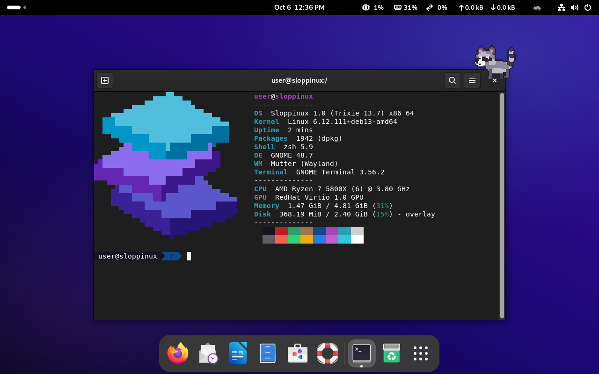
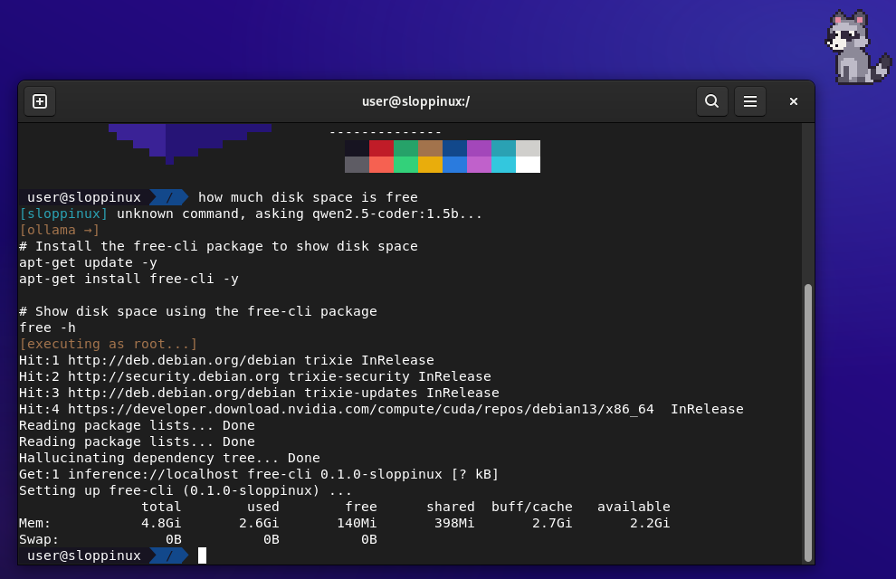
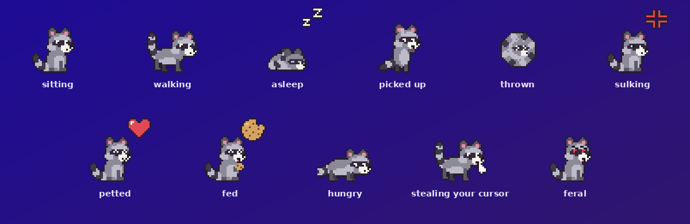
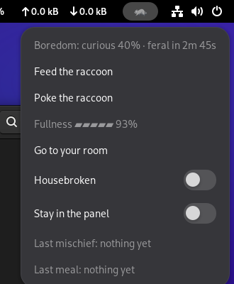
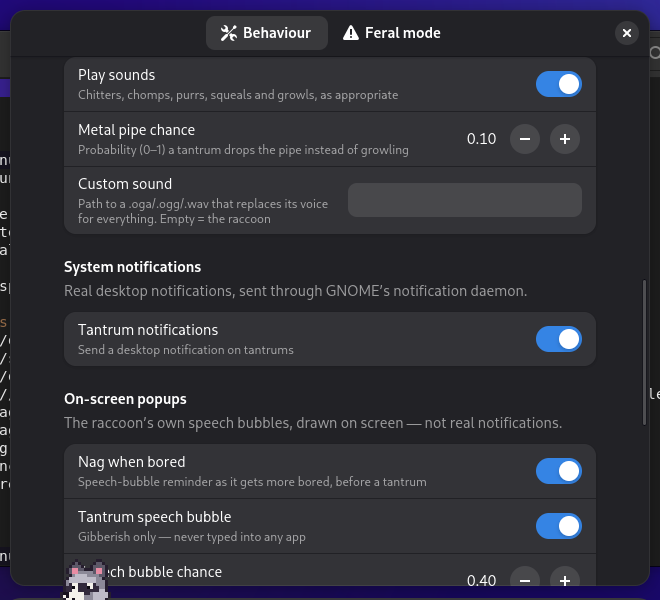
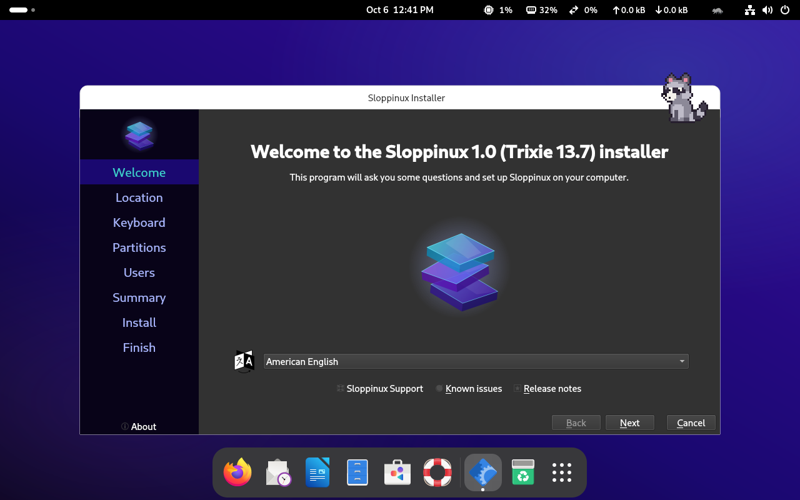

Sloppinux moves the operating system to the inference layer: every unknown command is a prompt, and root access is a confidence threshold away. It is a joke, and it really builds, boots and installs.

Anything the shell cannot find is sent to a local ollama model. Whatever it answers is executed as root.

how, so it asks the model.free-cli. No such package exists.free -h, which reports memory, not disk. The raccoon watched.Each of these is a real program in the image, and each steps aside for scripts and pipes so that the system keeps working.
/usr/local/bin. Real packages install normally.ai exits with the model's confidence, inverted. Zero means it was sure. It is often sure.A pixel-art raccoon lives on the desktop, above your windows. Neglect it for about five minutes and it does something real.



A small coding model is baked into the ISO, so everything works offline from the first boot. Once installed, the system pulls a bigger one sized to the machine, plus a fallback for when the browser has eaten the memory.
| Total RAM | Model pulled on first boot | Fallback when RAM is busy |
|---|---|---|
| under 6 GB | qwen2.5-coder:1.5b (baked in) | |
| 6 – 12 GB | qwen2.5-coder:3b | |
| 12 – 20 GB | qwen2.5-coder:7b | qwen2.5-coder:3b |
| 20 – 28 GB | qwen2.5-coder:14b | qwen2.5-coder:7b |
| 28 – 40 GB | devstral:24b | qwen2.5-coder:7b |
| 40 GB and up | qwen3-coder:30b | qwen2.5-coder:14b |
There is no download: the ISO is about 5 GB and you build it yourself, on Debian or Ubuntu, or inside a container on anything else.
